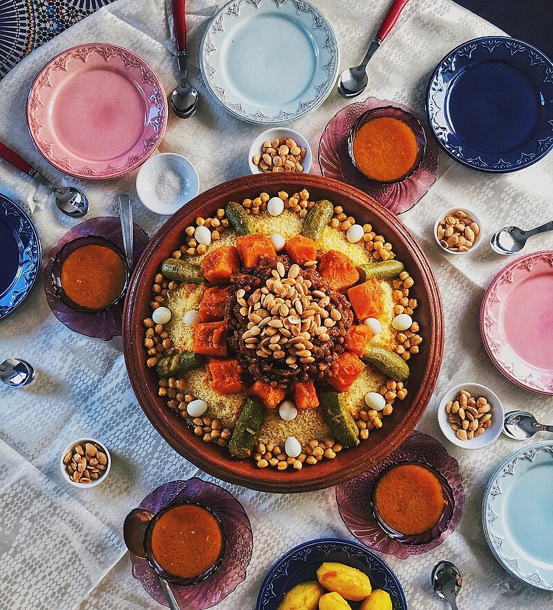

Sweet and Nutty Moroccan Couscous

I've simplified this recipe for couscous mesfouf without losing any of its deliciously complex flavor. Prepare all the mix-ins
ahead of time and it takes only minutes to make. Enjoy!
Ingredients
- 2 cups vegetable broth
- 5 tablespoons unsalted butter
- ⅓ cup chopped dates
- ⅓ cup chopped dried apricots
- ⅓ cup golden raisins
- 2 cups dry couscous
- 3 teaspoons ground cinnamon
- ½ cup slivered almonds, toasted
steps:
- Pour the vegetable broth into a large saucepan
- bring to a boil
- Add the butter, apricots, dates and raisins.
- Boil for 2 to 3 minutes.
- Remove from the heat, and stir in the couscous
- Cover, and let stand for 5 minutes.
- Stir in the cinnamon and toasted almonds, and serve.